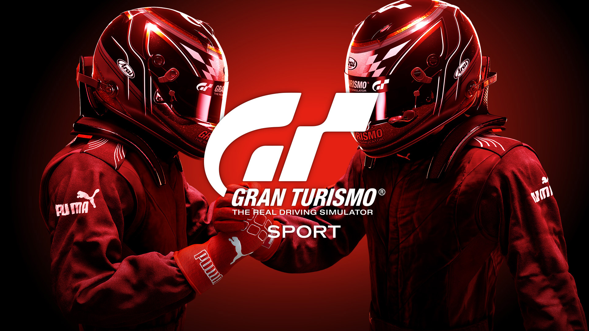

Gran Turismo Sport is a racing simulation game developed by Polyphony Digital and published by Sony Interactive Entertainment. It focuses on competitive online racing, realistic driving physics, and stunning visuals, making it a flagship title for PlayStation racing fans.
GT Sport features a robust online mode with FIA-certified championships, a wide selection of cars and tracks, and support for VR and racing wheels. It emphasizes sportsmanship, precision, and competitive racing.
| Component | Minimum | Recommended |
|---|---|---|
| Console | PlayStation 4 | PlayStation 4 Pro |
| Storage | 60 GB HDD | 60 GB SSD |
| Display | 720p | 1080p / 4K HDR |
| Internet | Required for online features | High-speed broadband |
Get the official version of GT Sport from the PlayStation Store:
🔽 Download from PlayStation